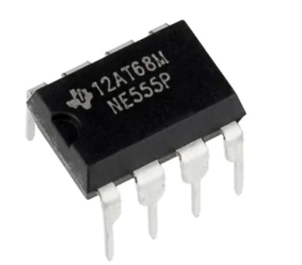
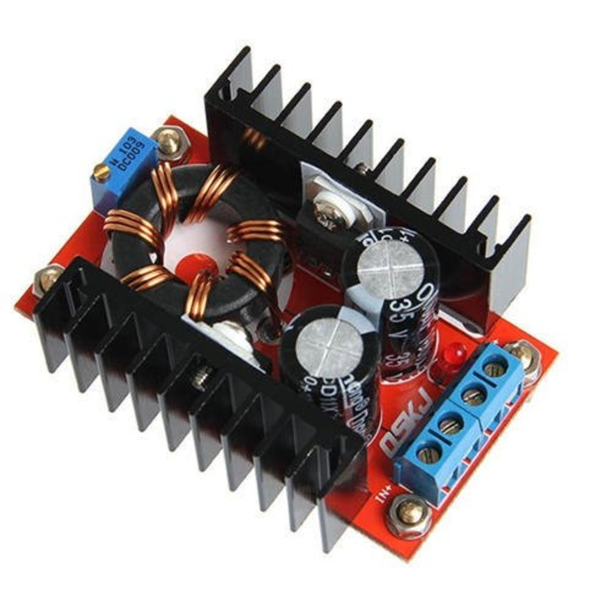
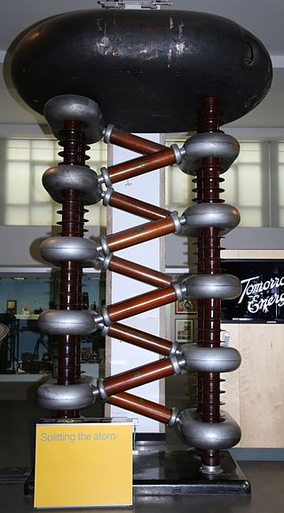
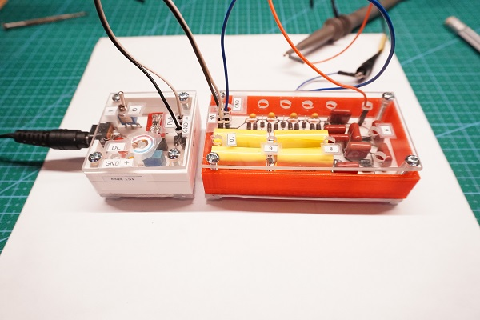

Temporizador 555
Funcionamiento básico de un temporizador 555 para generar señales que cambien en el tiempo o con un botón

Convertidor Elevador de Voltaje
Funcionamiento básico y construcción de un Convertidor de Voltaje DC-DC usando un inductor, diodo capacitor e interruptor.

Multiplicador de Cockcroft–Walton
Funcionamiento básico y construcción de un Multiplicador de Cockcroft–Walton el cual utiliza capacitores y diodos para convertir un voltaje AC a uno DC multiplicado por un cierto factor.

Fuente de Alto Voltaje
Se describe como se diseña e implmenta una fuente de hasta 200V DC basada en el uso de un Convertidor de Voltaje DC-DC y un Multiplicador de Cockcroft–Walton.

Semiconductores
Se describe de forma básica como funcionan los semiconductores y en particular un fotodiodo.